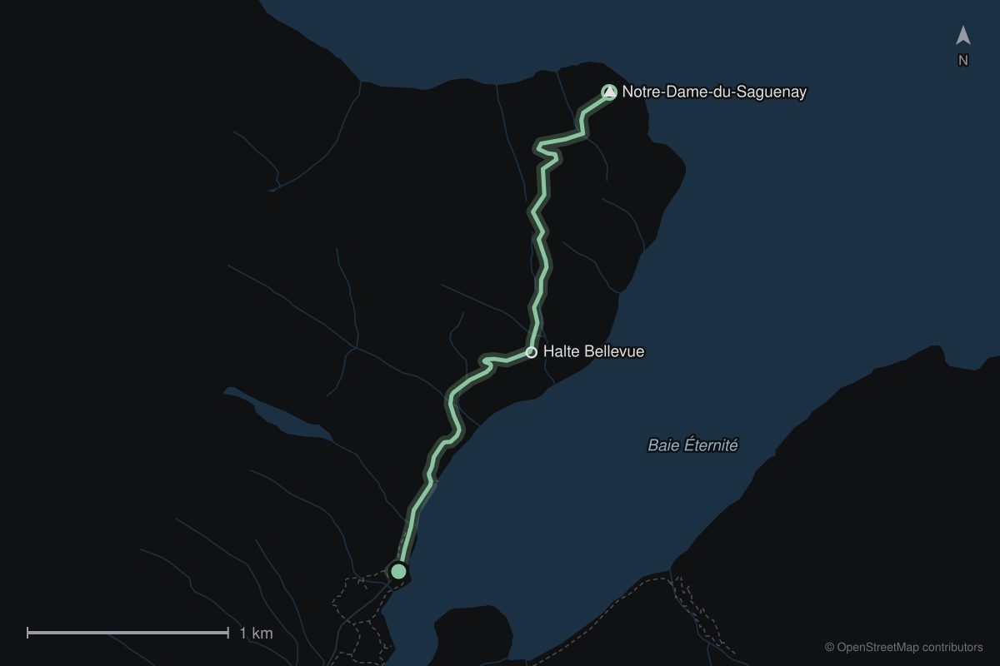
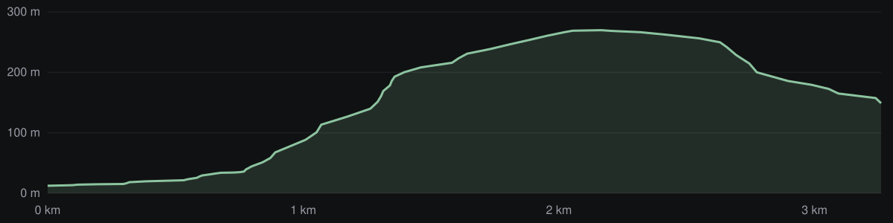

Sentier de la Statue, sobre el fiordo del Saguenay
Actualizado el 21 de noviembre de 2026
Desde la bahía Éternité, un sendero de bosque sube hasta la estatua de Notre-Dame-du-Saguenay, colocada en una cornisa del cabo Trinité, muy por encima del fiordo, desde 1881.

- Distancia
- Unos 7,6 km ida y vuelta, o 3,6 km ida y vuelta hasta el mirador Bellevue
- Desnivel
- Unos 600 m en total
- Duración
- De 3 a 4 h, unas 2 h hasta Bellevue
- Dificultad
- Intermedia a difícil
- Salida
- Centro de descubrimiento y servicios de la Baie-Éternité
- Temporada
- De finales de mayo a mediados de octubre
Mapa

Perfil de altitud

El recorrido
El sendero sale del centro de la Baie-Éternité y sube por el bosque del cabo Trinité. La primera parte es la más empinada; en el mirador Bellevue, la bahía y los acantilados del cabo Éternité se abren a tus pies: un buen sitio para parar o dar la vuelta.
Después, el sendero sigue subiendo por el cabo y luego baja hacia el fiordo hasta la estatua de Notre-Dame-du-Saguenay, levantada en 1881 como ofrenda de agradecimiento. Se alza en su cornisa, muy por encima del agua, frente a los barcos que remontan el fiordo.
Vuelve por el mismo camino: la subida de regreso por el cabo forma parte del día.
Conviene saber
- Subidas y bajadas. El sendero sube y baja en ambos sentidos: cuenta el esfuerzo, no solo la distancia.
- Mírala también desde el agua. Los cruceros por el fiordo pasan justo debajo de la estatua.
- Temporada. Se recomienda de finales de mayo a mediados de octubre.
- Acceso al parque. Se cobra entrada (gratis para menores de 18 años). Consulta el estado en sepaq.com.
Fotos


Guarda el día con Arpente
Toca grabar al salir y guarda el iPhone en el bolsillo. Arpente dibuja tu recorrido y mide la distancia, el tiempo y el desnivel, incluso con la pantalla apagada. Añade una foto y una nota, y la salida queda en tu diario. Descubre Arpente.
Otras salidas
 Mont Albert11,6 km ida y vuelta por la cara norte, o un circuito de 17,3 km
Mont Albert11,6 km ida y vuelta por la cara norte, o un circuito de 17,3 km Acropole des DraveursUnos 10,4 km ida y vuelta hasta la primera cumbre, 11,2 km hasta la tercera
Acropole des DraveursUnos 10,4 km ida y vuelta hasta la primera cumbre, 11,2 km hasta la tercera Canal de Lachine14,5 km solo ida, del Viejo Puerto a Lachine
Canal de Lachine14,5 km solo ida, del Viejo Puerto a Lachine Mont RoyalUnos 1,4 km desde lo alto de la calle Peel al mirador, unos 2 km hasta la cruz
Mont RoyalUnos 1,4 km desde lo alto de la calle Peel al mirador, unos 2 km hasta la cruz
El trazado del mapa es orientativo, calculado con BRouter sobre datos de OpenStreetMap (© colaboradores de OpenStreetMap, ODbL); altitudes SRTM. No sustituye al mapa oficial del parque. Las distancias, desniveles y tiempos de la tabla vienen de fuentes de los parques: consulta las condiciones antes de ir.